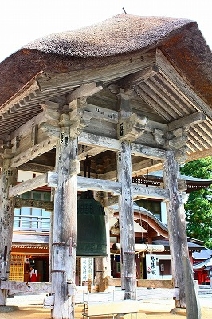

羽黒神社/山形県
山形である、鶴岡である。出羽三山である。
気が付きゃ6年前の訪問記である。遅くなってすまんのう。
山形県の月山、羽黒山、湯殿山の出羽三山は山岳信仰が盛んで、多くの行者が訪れている。
この出羽三山信仰の開祖は蜂子皇子。ご覧になったことがあると思うが、人間離れしたお顔立ちの御仁である。
その三つの山の中でも羽黒山はセンター的な役割を果たしており、行者以外のライトな観光客のほとんどは羽黒山にある羽黒神社を目指すことになっている。
というわけで人生そのものがスーパーライト級な愚生。迷わず羽黒山を目指すのであった。
そんな羽黒山神社のお膝元では不思議な飾り物を見ることが出来る。
建物の妻側に太い縄で作られたモノが掲げられているのだ。
コレは引綱というもので、羽黒山の松例祭のときに使われたものをこうして魔除けのために飾るのだという。
何だか蟹のオバケみたいだが、非常にありがたいものなのだ。
これが羽黒山の麓の家々の多くに飾られており、その信仰心の篤さが強く感じられたりするのであった。
で、羽黒山。
正式な参拝者はここで待機している山伏さんに先達してもらうのだとか。
杉の巨木が立ち並ぶ道を進んでいく。国宝の五重塔などもあるが、先を急ぎますよ。
で、しばらく歩くと巨大な社殿が見えてくる。
三神合祭殿という神社だ。
月山、湯殿山、羽黒山の3つの神様を合祀した神社なのだ。
なぜ合祀するかといえば、月山は行くのにハードで、湯殿山はこれまた別の意味でハードだからなのだよ。
それにしても一寸ビビルくらい大きい。高さは28ｍ。萱葺きの屋根の厚みが2.1ｍですって。
日本でも屈指の巨大な木造宗教建築だ。
拝殿には月山神社、出羽神社、湯殿神社の額が並ぶ。
萱葺きの屋根に反して軒下の飾りはゴージャスだ。
虹梁の上に黒い人の彫像が置かれていて何やら呪術的な感じしかしませんでしたよ。
三神合祭殿の隣にはこれまた立派な萱葺きの鐘楼。

と、まあ。すんごい社殿の連続攻撃なのですよ。
近くの祠には下駄供養。
置ききれない下駄が山積みされていた。
…というわけで前置きが長くなってしまって恐縮だが、ここからが本題です。
羽黒神社の一画を歩いていると赤い建物が見えてくる。
ここは霊祭殿といい、かつては地蔵堂だったという。
何で神社に地蔵堂が？と思われるかもしれないが、この出羽三山、死者の霊を祀る山でもあるのだ。
明治以降、神道と仏教は国策により明確に分けられたが、江戸以前の日本の信仰世界では神様も仏様もブラザーみたいなもんだったんだよ。
特に、山岳信仰はその境目が曖昧だ。さらに東北地方はその両者の境界は他地域に比べると明確ではない（ように思える）。
だから神社に地蔵堂があっても何ら不思議ではないのだ。
その霊祭殿の隣には大量のお地蔵さんが並んでいた。
全ての石像が服を着ている。
地蔵を亡き人に見立てて服を着せているのだろう。
こういう光景も東北地方に多いような気がする。
…ノースリーブ、ですか…
ベストに鉢巻。ガテン系だね。
…というわけでここからが本題の本題です（長くてすまんのう）。
霊祭殿の脇、地蔵群の向かいの斜面にはこんな光景が広がっているのだ。
下の赤いのは風車、上の茶色いのは…
そう、全部卒塔婆なんですよ！
まるでキノコの群生地のように無数の卒塔婆が林立している。その数約９万本！
しかもみな新しい卒塔婆だ。
見ているだけでもゾワゾワしてくるが、一本一本が死者の供養のための卒塔婆だと思うと、ゾワゾワを通り越して気が遠くなってくる。
そんな大量の卒塔婆の群れの中にあって、一画だけ様子の違う卒塔婆が奉納されている。
他の卒塔婆は家名や故人名、戒名などが記されているのに、この一画だけは妙な文章が書かれているのだ。
一枚一枚読んでみると…
「生木に火を付けた前世の命之霊位」
「天神様を利用した前世の命之霊位」
「大先祖山掛りで途中で亡くなりし命之霊位」
「大先祖糖尿病で狂って若死にした命一同の霊位」
「十一軒口炭坑時代に生き埋めされた人夫一同の霊位」
「一揆そう動で焼き殺された霊」
「心臓圧迫で若死にした命之霊位」
…なんなんだ、コレは！
卒塔婆が重なっていて全部読めないものの、刺激的なワードが次から次へと見え隠れ。
「○○家地獄に落とされ大蛇女狐…」
「生きながら殺された…」
「密輸した張本人…」
「片輪で生まれた…」
「背中に何万もの…」
「大先祖ばくちで遊び…」
「海賊盗賊時代に火をつけて焼き…」
「外国と組んで金銭の…」
読んでるうちに段々具合が悪くなってきそうな文言の数々。
これは一体何のための卒塔婆なのだろう？
その正体は判る筈もないが、当サイトお得意の妄想力30倍増し増しで想像するに…
恐らくシャーマンのような職能的霊能者が依頼者の前世や先祖の因業を診て、それを卒塔婆に記す事で因業落としのようなことをしているのではないだろうか。
当サイトでたびたび報告しているが、東北地方にはイタコ以外にも伝統的な職能的霊能者が数多く存在する。
山形県で言えば村上地方の「オナカマ」と呼ばれる巫女が有名だが、庄内地方にも「ミコ」「ミコサン」という盲目の口寄せを生業とする、つまりイタコのような巫女が存在するという。
このような民間信仰の霊能者や巫女の存在がこの謎の卒塔婆奉納習俗に深く関与している、と勝手に想像するのだ。
理由？単なる勘ですよ。ただ、そんなに大きく外れてはいないと思うんだよなあ。
それにしてもよくもこれだけ強烈な因果が揃ったものだ。
普通思い浮かびます？「お主の先祖は糖尿病で狂い死にしたのだあ！」…とか。
まるで我々が今住んでいる平穏な世の中をひっくり返すための呪詛のようなコトバの数々。
出羽三山の信仰だけでは説明できないディープな民間信仰、死者供養の世界に戦慄しまくりでしたよ。
2009.09.
珍寺大道場 HOME